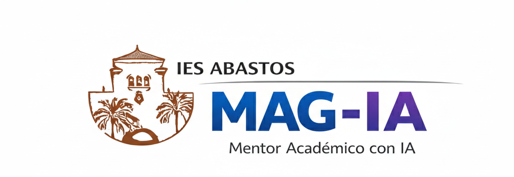

Tu mentor académico (pero en plan colega)
Olvídate de leerte 50 pdfs aburridos. MAG-IA te cuenta de qué va la FP, sin etiquetas y sin rollos raros. Pregúntale lo que te ralla.
Aquí el talento no tiene género. FP para todos.
No me invento nada, solo leo lo oficial.